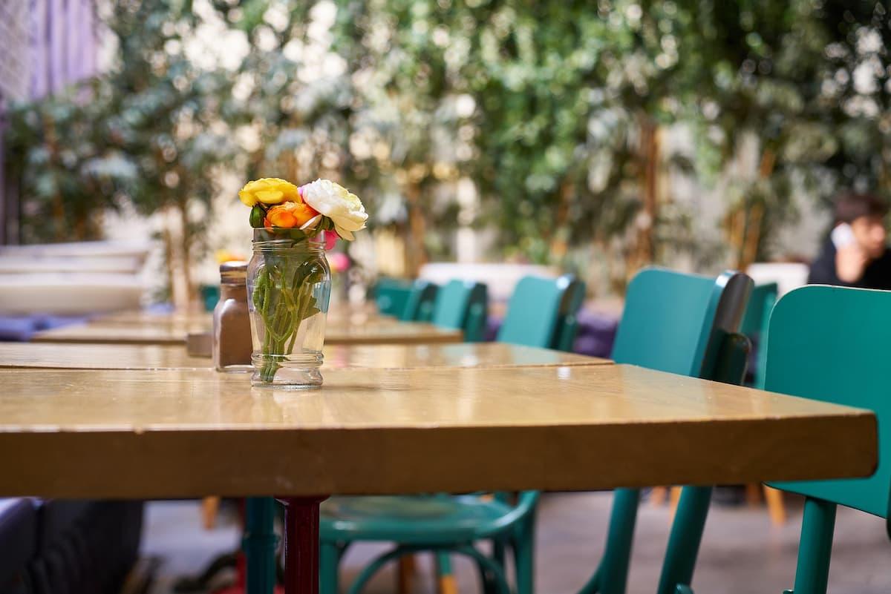

Ota yhteyttä
Voit varata kahvilan takahuoneen yksityistilaisuuksiin, kuten neulekerhon kokoontumiseen tai syntymäpäiville. Tilaan mahtuu 15 henkeä.
Voit ottaa meihin yhteyttä koskien tilavarauksia tai muuta asiaa alla olevan lomakkeen avulla.
Yhteystiedot
Kahvila SilmukkaTestikuja 1
12345 Testilä
040 123 4567
- Tilaukset, tilavaraukset ja kysymykset:
- info@kahvilasilmukka.fi
- Harrastusillat:
- illat@kahvilasilmukka.fi
Löydät meidät Instagramista nimellä @kahvilasilmukka
| Maanantai - Perjantai | 8:00 - 18:00 |
|---|---|
| Lauantai | 9:00 - 16:00 |
| Sunnuntai | Suljettu |
Näin löydät perille
Kahvila Silmukka sijaitsee Testilän keskustassa, Testikujan ja Asemakadun kulmassa. Rautatieasema ja kauppakeskus ovat molemmat noin viiden minuutin kävelymatkan päässä.
Junalla
Kävele asemalta Asemakatua pitkin keskustaan päin noin 300 metriä. Kahvila on vasemmalla puolella, ja sen tunnistaa vihreästä markiisista.
Bussilla
Lähin pysäkki on Kauppakeskus, josta on noin 200 metriä kahvilalle.
Autolla
Lähimmät pysäköintipaikat ovat kauppakeskuksen pysäköintihallissa. Kahvilan edessä on kaksi lyhytaikaista pysäköintipaikkaa.
Pyörällä
Kahvilan edessä on katettu pyöräteline, jossa on paikkoja 10 pyörälle.

Esteettömyys
Haluamme, että kahvilaan on helppo tulla kaikkien.
Kahvilaan on kynnyksetön sisäänkäynti katutasosta, ja ovi avautuu automaattisesti. Pöytien väliin jää tilaa pyörätuolille ja lastenvaunuille, ja tiloissa on esteetön wc. Avustajakoirat ovat aina tervetulleita. Kassalla on induktiosilmukka kuulolaitteen käyttäjille.
Jos tarvitset apua tai erityisjärjestelyjä esimerkiksi harrastusiltaan osallistuessasi, ota yhteyttä etukäteen, niin järjestämme asian.